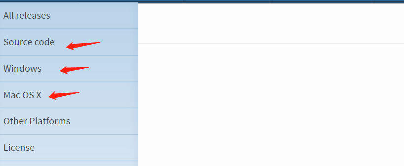
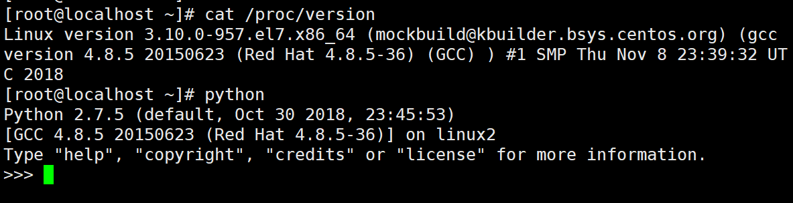
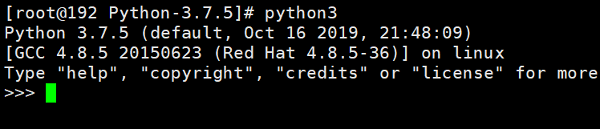
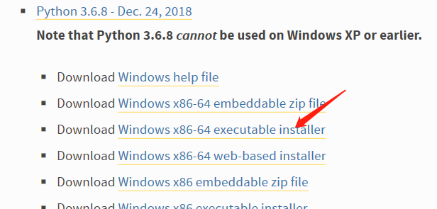
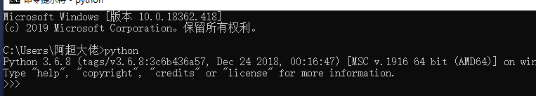
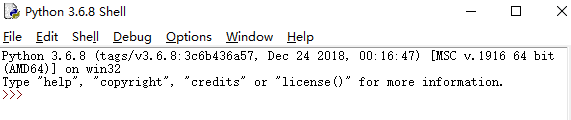

Python3 可应用于多平台包括 Windows、Linux 和 Mac OS X。
打开官网 https://www.python.org/downloads/windows/ 下载中心
以下是各个平台安装包的下载地址
Source Code 可用于 Linux 上的安装


以上是虚拟机系统版本和自带python的版本信息
yum -y install gcc openssl* zlib*
wget https://www.python.org/ftp/python/3.7.5/Python-3.7.5.tar.xz
mkdir /usr/local/python3
tar -xvf Python-3.7.5.tar.xz
cd Python-3.7.5
./configure --prefix=/usr/local/python3
make && make install
ln -s /usr/local/python3/bin/python3 /usr/bin/python3
ln -s /usr/local/python3/bin/pip3 /usr/bin/pip3

以下为在 Window 平台上安装 Python 的简单步骤。
打开 WEB 浏览器访问 https://www.python.org/downloads/windows/ ，一般就下载 executable installer，x86 表示是 32 位的，x86-64 表示 64 位的。

安装界面勾选 Add Python 3.8 to PATH 安装
完成后按 Win+R 键，输入 cmd 调出命令提示符，输入 python:

也可以在开始菜单中搜索 IDLE打开：

或者使用集成开发环境：PyCharm
PyCharm 是由 JetBrains 打造的一款 Python IDE，支持 macOS、 Windows、 Linux 系统。
PyCharm 功能 : 调试、语法高亮、Project管理、代码跳转、智能提示、自动完成、单元测试、版本控制……
PyCharm 下载地址 : https://www.jetbrains.com/pycharm/download/
安装教程 ：请参考博客 https://blog.csdn.net/qq_15698613/article/details/86502371
MAC 系统都自带有 Python2.7 环境，你可以在链接 https://www.python.org/downloads/mac-osx/ 上下载最新版安装 Python 3.x。
你也可以参考源码安装的方式来安装。
Python虚拟环境的主要目的是为了给不同的工程创建互相独立的运行环境。在虚拟环境下，每一个工程都有自己的依赖包，而与其它的工程无关。不同的虚拟环境中同一个包可以有不同的版本。并且，虚拟环境的数量没有限制。
virtualenv是用来创建虚拟环境的软件工具，我们可以通过pip或者pip3来安装
pip install virtualenv
pip3 install virtualenv创建虚拟环境非常简单，通过以下命令就可以创建了：
virtualenv [虚拟环境的名字]
虚拟环境创建好了以后，那么可以进入到这个虚拟环境中，然后安装一些第三方包，进入虚拟环境在不同的操作系统中有不同的方式，一般分为两种，第一种是Windows，第二种是Unix/Linux：
windows进入虚拟环境：进入到虚拟环境的Scripts文件夹中，然后执行activate。source /path/to/virtualenv/bin/activate退出虚拟环境很简单，通过一个命令就可以完成：deactivate。
Python解释器：在电脑的环境变量中，一般是不会去更改一些环境变量的顺序的。也就是说比如你的Python2/Scripts在Python3/Scripts的前面，那么你不会经常去更改他们的位置。但是这时候我确实是想在创建虚拟环境的时候用Python3这个版本，这时候可以通过-p参数来指定具体的Python解释器：
virtualenv -p C:\Python36\python.exe [virutalenv name]virtualenvwrapper这个软件包可以让我们管理虚拟环境变得更加简单。不用再跑到某个目录下通过virtualenv来创建虚拟环境，并且激活的时候也要跑到具体的目录下去激活。
virtualenvwrapperlinux：pip install virtualenvwrapper。
windows：pip install virtualenvwrapper-win。virtualenvwrapper基本使用：创建虚拟环境：
mkvirtualenv my_env
那么会在你当前用户下创建一个Env的文件夹，然后将这个虚拟环境安装到这个目录下。
如果你电脑中安装了python2和python3，并且两个版本中都安装了virtualenvwrapper，那么将会使用环境变量中第一个出现的Python版本来作为这个虚拟环境的Python解释器。
切换到某个虚拟环境：
workon my_env
退出当前虚拟环境：
deactivate
删除某个虚拟环境：
rmvirtualenv my_env
列出所有虚拟环境：
lsvirtualenvmkvirtualenv的默认路径：在我的电脑->右键->属性->高级系统设置->环境变量->系统变量中添加一个参数WORKON_HOME，将这个参数的值设置为你需要的路径。
Python版本：在使用mkvirtualenv的时候，可以指定--python的参数来指定具体的python路径：
mkvirtualenv --python==C:\Python36\python.exe hy_env